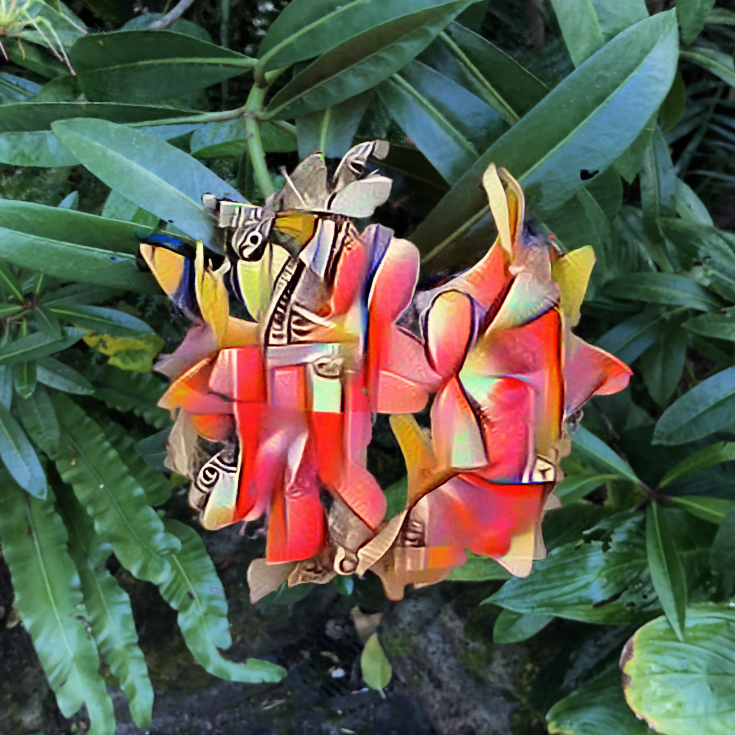

|
Michael Steiner I am currently a PhD student at Graz University of Technology at the Institute of Computer Graphics and Vision, supervised by Markus Steinberger. In 2023 I received my Master's Degree (with distiction) for Computer Science at Graz University of Technology, with a Major in Visual Computing, and Minor in Machine Learning. My Master Thesis tackled accelerated NeRF rendering on the basis of DONeRF. |
{kind=link}
ResearchMy main interest lies in Parallel Compute and applying it to all areas of research, most recently in the field of computer graphics. Our research currently focuses on Novel View Synthesis with NeRFs and 3D Gaussian Splatting, and Split Rendering. |

|
StopThePop: Sorted Gaussian Splatting for View-Consistent Real-Time Rendering
Michael Steiner*, Lukas Radl*, Mathias Parger, Alexander Weinrauch, Bernhard Kerbl, Markus Steinberger. arXiv, 2024. 3D Gaussian Splatting performs an approximate global sort of primitives, leading to undesireable popping artifacts. By hierarchically sorting primitives in a tile-based rasterizer, we allow for view-consistent rendering while maintaining real-time performance. |
|
|
Frustum Volume Caching for Accelerated NeRF Rendering
Michael Steiner, Thomas Köhler, Lukas Radl, Markus Steinberger. arXiv, 2024. We accelerate NeRF rendering of high-quality video sequences by caching and temporally reusing NeRF latent codes. Our frustum-aligned volumetric cache datastructure together with our novel view-dependent cone encoding allow for smaller latent codes and fast re-evaluation, leading to render speed-ups of up to 2x for our Instant-NGP based model. |
|  |
LAENeRF: Local Appearance Editing of Neural Radiance Fields
Lukas Radl, Michael Steiner, Andreas Kurz, Markus Steinberger. CVPR, 2024. Locally Stylized Neural Radiance Fields via point-based 3D style transfer with geometry-aware losses - reduced background artefacts, more detail retention and view-consistency. |
Miscellaneous |
|
XYZ
XYZ |
|
Thank you to Jon Barron for providing the public source code of his website. |